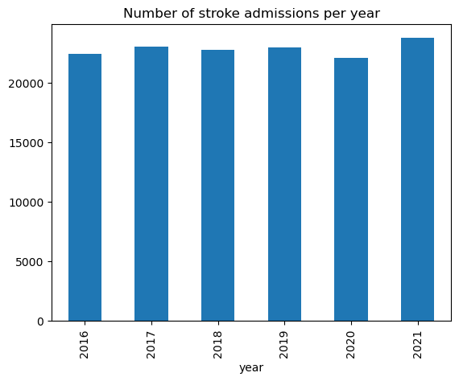
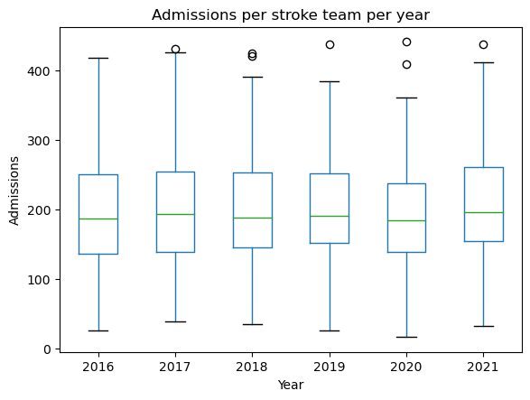

Year by year comparison#
(2016 vs 2017 vs 2018 vs 2019 vs 2020 vs 2021)
Is there consistency? e.g. thrombolysis, arrival to scan, ambulance times. Note: we don’t know if they had COVID.
Existing research includes:
https://www.strokeaudit.org/SupportFiles/Documents/Webinars/Webinar-slides.aspx
https://www.ahajournals.org/doi/pdf/10.1161/STROKEAHA.120.032253 (and they have COVID-19 status for 23%)
Aim is to understand whether it would be appropriate to include 2016 or 2020 or 2021 in analysis.
Set up#
# Import packages and functions
from dataclasses import dataclass
import matplotlib.pyplot as plt
import os
import pandas as pd
# Linting
%load_ext pycodestyle_magic
%pycodestyle_on
# Set paths and filenames
@dataclass(frozen=True)
class Paths:
'''Singleton object for storing paths to data and files.'''
data_path = './../output/'
data_filename = 'reformatted_data.csv'
admission_only_filename = 'reformatted_data_admissions_only.csv'
hospitals_filename = 'clean_stroke_hospitals_2022.csv'
notebook = '01'
paths = Paths()
# Load data
data = pd.read_csv(os.path.join(paths.data_path, paths.data_filename))
data_full = pd.read_csv(os.path.join(
paths.data_path, paths.admission_only_filename))
Admissions#
Using restricted dataset.
# Admissions per year
yearly_admissions = data.groupby('year').size().reset_index(name='admissions')
yearly_admissions.plot.bar(x='year', y='admissions',
title='Number of stroke admissions per year',
legend=None)
plt.show()

# Find number of admissions per stroke team per year
team_admissions_yearly = (data
.groupby(['stroke_team', 'year'])
.size()
.reset_index(name='admissions'))
# Plot per year
team_admissions_yearly.boxplot('admissions', by='year')
plt.xlabel('Year')
plt.ylabel('Admissions')
plt.title('Admissions per stroke team per year')
plt.suptitle('')
plt.grid(None)
plt.show()
